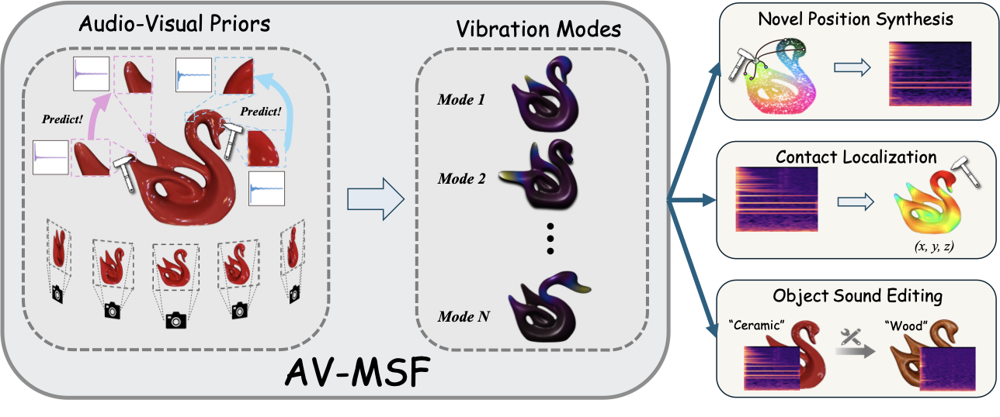

|
Zisen Shao 邵子森
I am a second-year master's student in Computer Science at the
University of Maryland, College Park,
where I conducted research under the guidance of Prof. Ruohan Gao, and collaborated with Prof. Dinesh Manocha.
|

Aurora over Lake Mendota |
Publications |
|
 |
Objects as Audio-Visual Modal Sound Fields
Zisen Shao*, Zihao Wei*, Derong Jin, and Ruohan Gao European Conference on Computer Vision (ECCV), 2026 A physics-based 3D audio-visual object representation reconstructed from multi-view images and few-shot impact sound recordings. |
|
|
FreeFix: Boosting 3D Gaussian Splatting via Fine-Tuning-Free Diffusion Models
Hongyu Zhou, Zisen Shao, Sheng Miao, Pan Wang, Dongfeng Bai, Bingbing Liu, Yiyi Liao International Conference on 3D Vision (3DV), 2026 A fine-tuning-free approach designed to eliminate artifacts and boost the rendering quality of 3D Gaussian Splatting (3DGS) in extrapolated views |

|
WeRef: An Open-source and Extensible Dataset for Referee Gesture Recognition in RoboCup
Zisen Shao, Josiah P. Hanna RoboCup-2025: Robot Soccer World Cup XXVIII, 2025 (Oral Presentation) WeRef is an open-source synthetic data generation pipeline for RoboCup Standard Platform League (SPL) referee gestures recognition. |
|
|
Reinforcement Learning Within the Classical Robotics Stack: A Case Study in Robot Soccer
Adam Labiosa, Zhihan Wang, Siddhant Agarwal, William Cong, Geethika Hemkumar, Abhinav Narayan Harish, Benjamin Hong, Josh Kelle, Chen Li, Yuhao Li, Zisen Shao, Peter Stone, Josiah P. Hanna IEEE International Conference on Robotics and Automation (ICRA), 2025 (Champion of RoboCup SPL Challenge Shield Division 2024, Best RoboCup-Themed Paper Award @ Roboletics 2.0) A novel architecture integrating RL within a classical robotics stack, while employing a multi-fidelity sim2real approach and decomposing behavior into learned sub-behaviors with heuristic selection. |
{kind=link}
|
Thanks to this amazing template! |